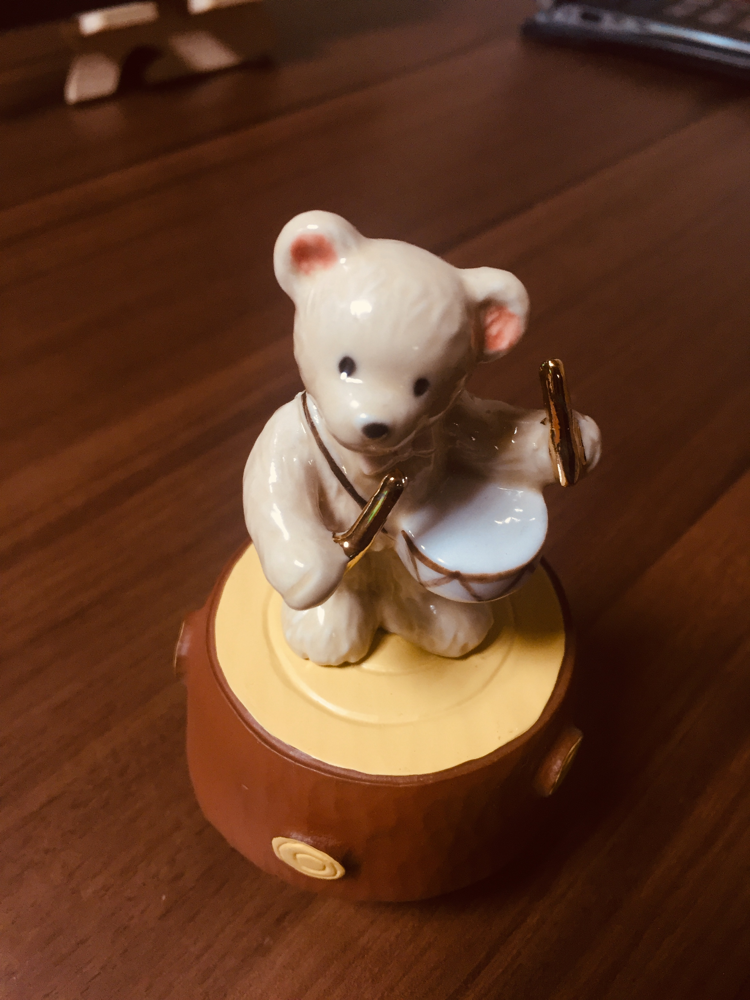

이것은 너무너무 귀여운 곰돌이 오르골 이것은 너무너무 귀여운 곰돌이 오르골 이것은 너무너무 귀여운 곰돌이 오르골 이것은 너무너무 귀여운 곰돌이 오르골 이것은 너무너무 귀여운 곰돌이 오르골 이것은 너무너무 귀여운 곰돌이 오르골 이것은 너무너무 귀여운 곰돌이 오르골 이것은 너무너무 귀여운 곰돌이 오르골 이것은 너무너무 귀여운 곰돌이 오르골 이것은 너무너무 귀여운 곰돌이 오르골 이것은 너무너무 귀여운 곰돌이 오르골 이것은 너무너무 귀여운 곰돌이 오르골 이것은 너무너무 귀여운 곰돌이 오르골 이것은 너무너무 귀여운 곰돌이 오르골 이것은 너무너무 귀여운 곰돌이 오르골 이것은 너무너무 귀여운 곰돌이 오르골 이것은 너무너무 귀여운 곰돌이 오르골 이것은 너무너무 귀여운 곰돌이 오르골 이것은 너무너무 귀여운 곰돌이 오르골 이것은 너무너무 귀여운 곰돌이 오르골 이것은 너무너무 귀여운 곰돌이 오르골 이것은 너무너무 귀여운 곰돌이 오르골 이것은 너무너무 귀여운 곰돌이 오르골 이것은 너무너무 귀여운 곰돌이 오르골 이것은 너무너무 귀여운 곰돌이 오르골 이것은 너무너무 귀여운 곰돌이 오르골 이것은 너무너무 귀여운 곰돌이 오르골 이것은 너무너무 귀여운 곰돌이 오르골 이것은 너무너무 귀여운 곰돌이 오르골 이것은 너무너무 귀여운 곰돌이 오르골 이것은 너무너무 귀여운 곰돌이 오르골 이것은 너무너무 귀여운 곰돌이 오르골 이것은 너무너무 귀여운 곰돌이 오르골 이것은 너무너무 귀여운 곰돌이 오르골 이것은 너무너무 귀여운 곰돌이 오르골 이것은 너무너무 귀여운 곰돌이 오르골 이것은 너무너무 귀여운 곰돌이 오르골 이것은 너무너무 귀여운 곰돌이 오르골 이것은 너무너무 귀여운 곰돌이 오르골 이것은 너무너무 귀여운 곰돌이 오르골 이것은 너무너무 귀여운 곰돌이 오르골